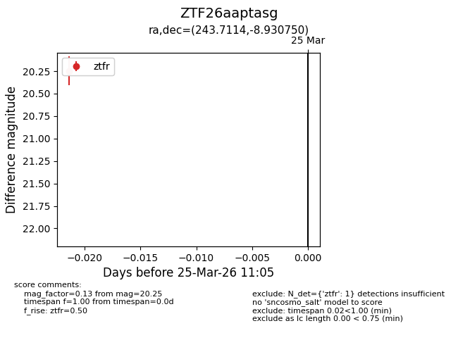
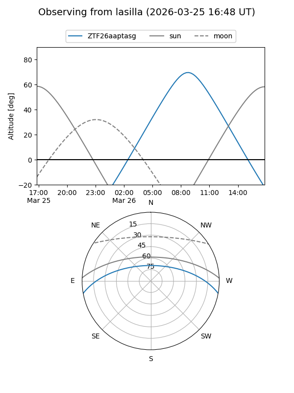
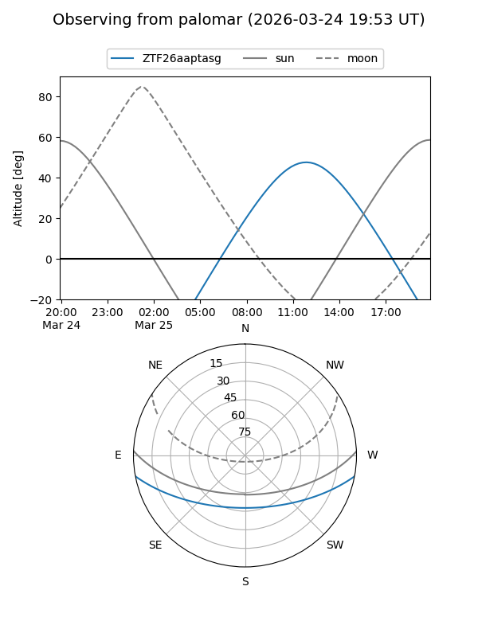

ZTF26aaptasg
Target ZTF26aaptasg at 2026-03-25 11:08
Aliases and brokers:
FINK: link
Lasair: link
ALeRCE: link
alt names
ZTF26aaptasg (ztf,fink_ztf)
Coordinates:
equatorial (ra, dec) = 243.7114,-8.93075
equatorial (HMS+DMS) = 16:14:50.74,-08:55:50.70
galactic (l, b) = (4.0532,+28.96493)
Flags:
Photometry:
last ztfr=20.25
1 ztfr detections
Lightcurve

Visibility


Additional plots